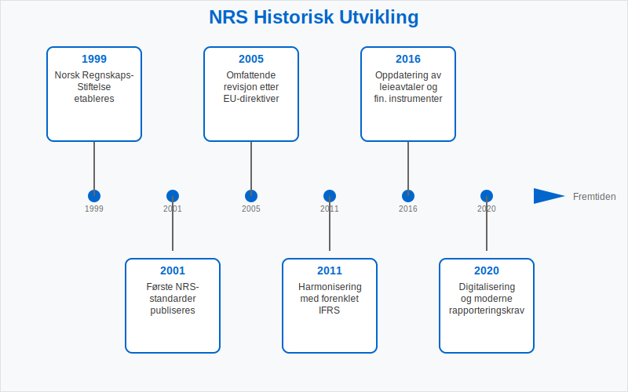
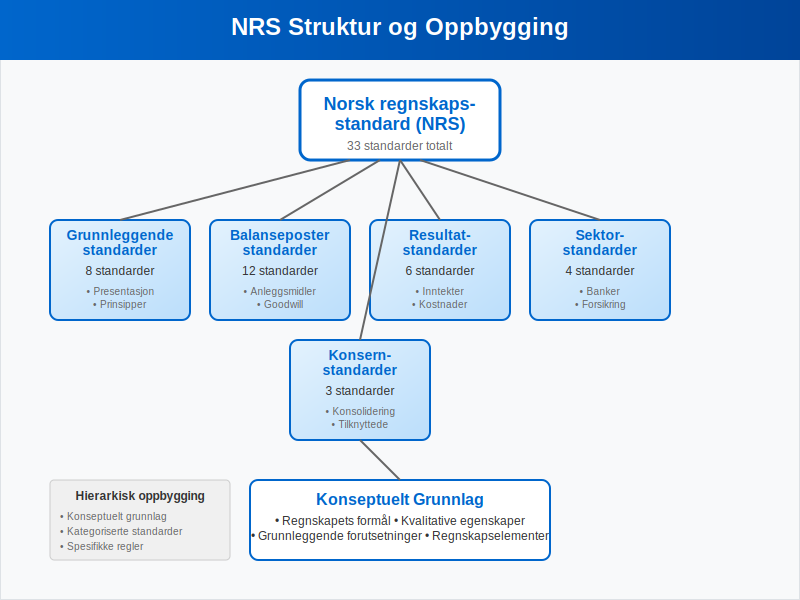
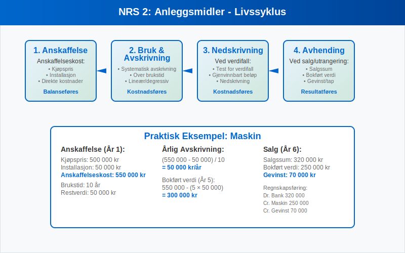
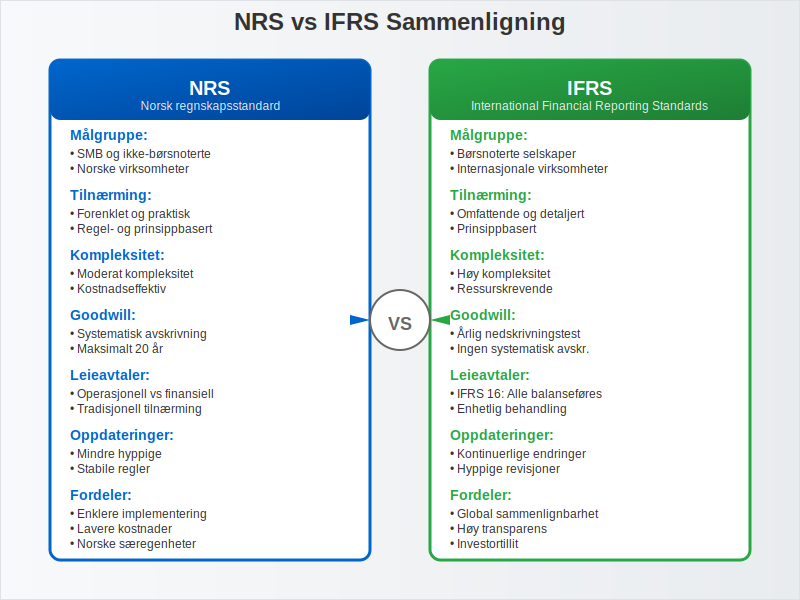
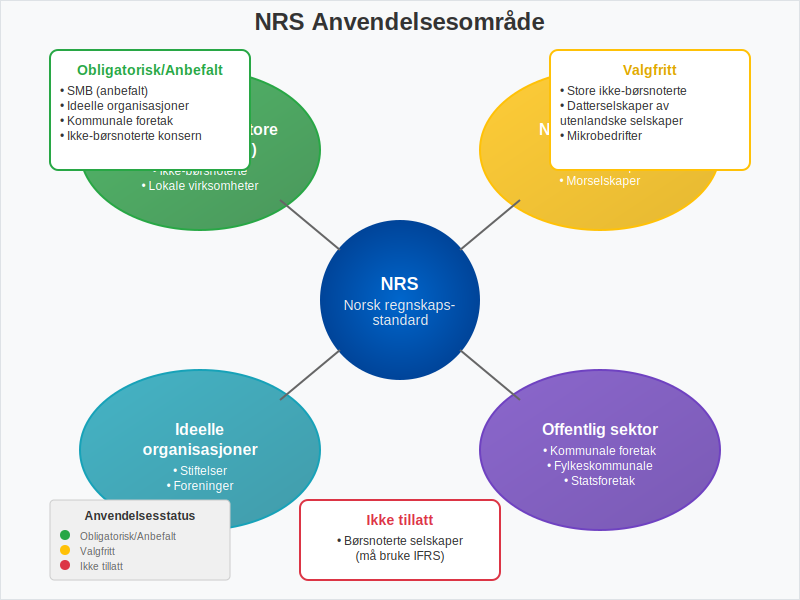
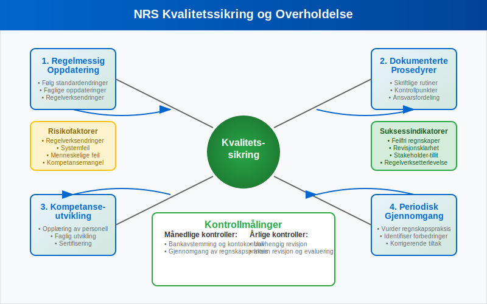

Norsk regnskapsstandard (NRS) er det nasjonale rammeverket for regnskapsføring i Norge, utviklet spesielt for norske virksomheter som ikke er pålagt å følge IFRS. NRS representerer en balanse mellom internasjonale regnskapsprinsipper og norske særegenheter, og sikrer at norske bedrifter kan føre regnskap som både oppfyller nasjonale krav og gir sammenlignbar finansiell informasjon.
Standardene er utviklet av Norsk RegnskapsStiftelse (NRS) i samarbeid med regnskapsmiljøet og bygger på god regnskapsskikk og internasjonale beste praksis. For de fleste norske virksomheter utgjør NRS det primære regelverket for bokføring og regnskapsrapportering.
Historisk Utvikling og Bakgrunn
Norsk regnskapsstandard har sin opprinnelse i behovet for å modernisere og harmonisere norsk regnskapspraksis med internasjonale standarder, samtidig som man beholdt tilpasninger til norske forhold.

Viktige Milepæler i NRS-utviklingen
- 1999: Norsk RegnskapsStiftelse etableres
- 2001: Første NRS-standarder publiseres
- 2005: Omfattende revisjon etter EU-direktiver
- 2011: Harmonisering med forenklet IFRS
- 2016: Oppdatering av leieavtaler og finansielle instrumenter
- 2020: Digitalisering og moderne rapporteringskrav
Formål og Målsetting
NRS har som hovedformål å:
- Sikre kvalitet i norsk regnskapsrapportering
- Redusere kompleksitet sammenlignet med full IFRS
- Bevare norske særegenheter i regnskapsføring
- Fremme sammenlignbarhet mellom norske virksomheter
- Støtte små og mellomstore bedrifter med praktiske løsninger
NRS’ Struktur og Oppbygging
Norsk regnskapsstandard er organisert som et helhetlig system av standarder som dekker alle vesentlige områder av regnskapsføring.

Standardkategorier
| Kategori | Beskrivelse | Antall Standarder |
|---|---|---|
| Grunnleggende standarder | Fundamentale prinsipper og rammeverk | 8 standarder |
| Balansepoststandader | Spesifikke regler for balanseposter | 12 standarder |
| Resultatstandarder | Inntekts- og kostnadsføring | 6 standarder |
| Sektorstandarder | Bransjespesifikke regler | 4 standarder |
| Konsernstandarder | Konsernregnskap | 3 standarder |
Det Konseptuelle Grunnlaget
NRS bygger på et konseptuelt grunnlag som definerer:
- Regnskapets formål - Gi beslutningsnyttig informasjon
- Kvalitative egenskaper - Relevans, pålitelighet og sammenlignbarhet
- Grunnleggende forutsetninger - Periodisering og fortsatt drift
- Regnskapselementer - Aktiva, gjeld, egenkapital, inntekter og kostnader
Sentrale NRS-Standarder
NRS 1: Presentasjon av Regnskapet
Denne grunnleggende standarden etablerer krav til:
- Regnskapsoppstilling - Format og innhold
- Sammenligningstall - Krav til foregående år
- Noteopplysninger - Minimumskrav til tilleggsinformasjon
- Konsistens - Ensartet presentasjon over tid
NRS 2: Anleggsmidler
NRS 2 dekker regnskapsføring av anleggsmidler og omfatter:
- Anskaffelseskost - Hva som skal inkluderes i anskaffelseskost
- Avskrivninger - Systematisk avskrivning over brukstid
- Nedskrivninger - Test for verdifall
- Avhending - Regnskapsføring ved salg eller utrangering

NRS 8: Goodwill og Andre Immaterielle Eiendeler
Denne standarden regulerer immaterielle eiendeler:
- Goodwill - Systematisk avskrivning over maksimalt 20 år
- Utviklingskostnader - Strenge kriterier for aktivering
- Patenter og lisenser - Avskrivning over juridisk eller økonomisk levetid
- Varemerker - Vurdering av verdi og levetid
NRS 13: Leieavtaler
NRS 13 gir regler for regnskapsføring av leieavtaler:
| Type Leieavtale | Regnskapsføring Leietaker | Regnskapsføring Utleier |
|---|---|---|
| Operasjonell leie | Kostnadsføring av leie | Inntektsføring av leie |
| Finansiell leie | Balanseføring av eiendel | Fordring på leietaker |
| Sale and leaseback | Spesielle regler | Kjøp og utleie |
NRS 15A: Pensjonskostnader
Denne standarden dekker regnskapsføring av pensjonsforpliktelser:
- Innskuddsbaserte ordninger - Kostnadsføring av innbetalinger
- Ytelsesbaserte ordninger - Aktuarmessig beregning av forpliktelser
- Premieavvik - Periodisering over gjennomsnittlig opptjeningstid
- Estimatavvik - Behandling av aktuarmessige gevinster og tap
NRS vs. IFRS - Hovedforskjeller
Sammenligning av Tilnærminger
| Aspekt | NRS | IFRS |
|---|---|---|
| Kompleksitet | Forenklet | Omfattende |
| Målgruppe | SMB og nasjonale selskaper | Internasjonale og børsnoterte |
| Fleksibilitet | Moderat | Høy |
| Detaljnivå | Praktisk orientert | Prinsippbasert |
| Oppdateringsfrekvens | Mindre hyppig | Kontinuerlig |

Spesifikke Forskjeller
Goodwill og Immaterielle Eiendeler:
- NRS: Systematisk avskrivning av goodwill over maksimalt 20 år
- IFRS: Årlig nedskrivningstest uten systematisk avskrivning
Leieavtaler:
- NRS: Skiller mellom operasjonelle og finansielle leieavtaler
- IFRS 16: Alle vesentlige leieavtaler balanseføres
Finansielle Instrumenter:
- NRS: Forenklet tilnærming med fokus på anskaffelseskost
- IFRS 9: Kompleks klassifisering basert på forretningsmodell
Inntektsføring:
- NRS: Tradisjonell tilnærming basert på risiko og kontroll
- IFRS 15: Femtrinns modell basert på ytelsesforpliktelser
Anvendelsesområde og Målgrupper
Hvem Bruker NRS?
NRS er primært utviklet for:
- Små og mellomstore bedrifter som ikke er børsnoterte
- Datterselskaper av utenlandske selskaper (valgfritt)
- Norske konsern som ikke er pålagt IFRS
- Ideelle organisasjoner og stiftelser
- Kommunale og fylkeskommunale foretak

Frivillig vs. Obligatorisk Anvendelse
| Virksomhetstype | NRS Status | Alternativ |
|---|---|---|
| Børsnoterte selskaper | Ikke tillatt | Obligatorisk IFRS |
| Store ikke-børsnoterte | Valgfritt | IFRS eller forenklet IFRS |
| SMB | Anbefalt | Forenklet regnskap |
| Mikrobedrifter | Valgfritt | Forenklet regnskap |
Implementering og Praktisk Anvendelse
Overgangsprosessen
Overgang til NRS krever systematisk planlegging:
- Kartlegging av eksisterende regnskapspraksis
- Gap-analyse mot NRS-krav
- Implementeringsplan med tidsfrister
- Opplæring av regnskapspersonell
- Testing av nye prosedyrer
- Dokumentasjon av endringer
Praktiske Utfordringer
Kompetansekrav:
- Forståelse av NRS-prinsipper
- Oppdatering av regnskapssystemer
- Endring av interne rutiner
- Kommunikasjon med interessenter
Systemtilpasninger:
- Oppdatering av kontoplan
- Tilpasning av rapporteringsformater
- Automatisering av beregninger
- Integrasjon med eksisterende systemer
Kvalitetssikring og Overholdelse
Internkontroll for NRS-Overholdelse
Effektiv internkontroll sikrer korrekt anvendelse av NRS:
- Regelmessig oppdatering på standardendringer
- Dokumenterte prosedyrer for alle NRS-områder
- Kompetanseutvikling for regnskapspersonell
- Periodisk gjennomgang av regnskapspraksis

Vanlige Feil og Fallgruver
| Område | Vanlig Feil | Korrekt Praksis |
|---|---|---|
| Anleggsmidler | Feil avskrivningstid | Vurder økonomisk levetid |
| Goodwill | Manglende avskrivning | Maksimalt 20 år |
| Leieavtaler | Feil klassifisering | Vurder risiko og kontroll |
| Pensjoner | Manglende periodisering | Bruk aktuarberegninger |
Fremtidige Utviklingstrekk
Planlagte Endringer og Oppdateringer
NRS utvikles kontinuerlig for å møte nye behov:
- Digitalisering - Tilpasning til automatiserte prosesser
- Bærekraftsrapportering - Integrering av ESG-faktorer
- Internasjonalisering - Økt harmonisering med IFRS
- Forenkling - Redusert kompleksitet for SMB
Teknologiske Påvirkninger
Kunstig Intelligens:
- Automatisk klassifisering av transaksjoner
- Prediktiv analyse for nedskrivninger
- Intelligent dokumentgjenkjenning
Blockchain og Distribuerte Systemer:
- Økt sporbarhet i regnskapsføring
- Automatiserte kontroller og avstemminger
- Redusert behov for manuell verifikasjon
Sektorspesifikke Tilpasninger
Finansielle Institusjoner
Banker og finansinstitusjoner har særlige krav:
- Kredittap - Spesielle regler for nedskrivninger
- Finansielle instrumenter - Komplekse verdsettelsesregler
- Kapitaldekning - Rapportering til finanstilsynet
- Likviditetsstyring - Særlige krav til likviditet
Forsikringsselskaper
Forsikringsbransjen har unike regnskapskrav:
- Tekniske avsetninger - Aktuarmessige beregninger
- Premiereserver - Periodisering av forsikringspremier
- Erstatningsavsetninger - Estimering av fremtidige utbetalinger
- Solvensrapportering - Overholdelse av kapitalkrav
Offentlig Sektor
Kommuner og fylkeskommuner følger tilpassede regler:
- Målstyring - Fokus på tjenesteproduksjon
- Balanserte budsjetter - Krav til økonomisk balanse
- Investeringsregnskap - Særlige regler for infrastruktur
- Transparens - Økt åpenhet om ressursbruk
Internasjonale Sammenhenger
Nordisk Samarbeid
NRS koordineres med andre nordiske land:
- Felles prinsipper - Harmonisering av grunnleggende tilnærminger
- Erfaringsutveksling - Deling av beste praksis
- Koordinert utvikling - Felles respons på EU-direktiver
- Sammenlignbarhet - Økt transparens på tvers av landegrenser
EU-Direktiver og Påvirkning
Europeiske regnskapsdirektiver påvirker NRS:
- Regnskapsdirektivet - Grunnleggende krav til regnskapsføring
- Revisjonsforordningen - Krav til revisjonstjenester
- Transparensdirektivet - Økt åpenhet for børsnoterte selskaper
- Taksonomiforordningen - Bærekraftsrapportering
Praktiske Eksempler og Case-studier
Case 1: Implementering i Produksjonsbedrift
En mellomstor produksjonsbedrift implementerte NRS med følgende tilnærming:
Utfordringer:
- Kompleks lagerbeholdning med work-in-progress
- Omfattende anleggsmidler med ulik levetid
- Langsiktige produksjonskontrakter
Løsninger:
- Implementerte systematisk kostkalkulering
- Etablerte avskrivningsplaner basert på teknisk levetid
- Utviklet rutiner for prosjektregnskapsføring
Case 2: Overgang fra Forenklet til NRS
Et voksende IT-selskap gikk over fra forenklet regnskap til NRS:
Motivasjon:
- Økt kompleksitet i forretningsmodellen
- Behov for mer detaljert finansiell informasjon
- Forberedelse til eventuell børsnotering
Implementering:
- Oppgraderte regnskapssystem
- Implementerte månedlig rapportering
- Etablerte internkontrollrutiner
Ressurser og Veiledning
Offisielle Kilder
- Norsk RegnskapsStiftelse - Utgiver av standardene
- Regnskapsloven - Juridisk grunnlag
- Bokføringsforskriften - Detaljerte regler
Faglige Ressurser
- Den norske Revisorforening - Faglig veiledning
- Regnskapsprodusentenes Forening - Praktisk støtte
- Universiteter og høyskoler - Utdanning og forskning
Digitale Verktøy
- Regnskapssystemer - Integrert NRS-støtte
- Opplæringsplattformer - Online kurs og sertifisering
- Faglige databaser - Tilgang til standarder og tolkninger
Norsk regnskapsstandard representerer en balansert tilnærming til regnskapsføring som kombinerer internasjonale beste praksis med norske særegenheter. For de fleste norske virksomheter gir NRS et praktisk og kostnadseffektivt rammeverk for å sikre god regnskapsskikk og transparent finansiell rapportering. Ved å følge NRS kan bedrifter sikre både lovmessig overholdelse og høy kvalitet i sin regnskapsføring.